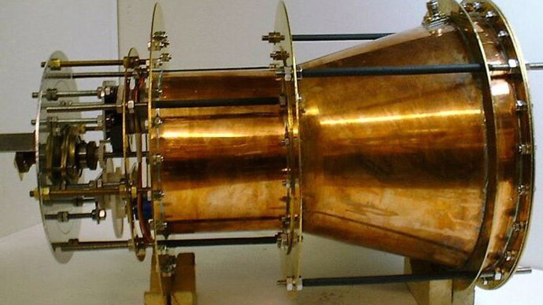

The Tom Bearden
Website
|
Published August1, 2014 Edited: August2, 2014
 Photo from emdrive.com
The drive’s creator, British scientist Roger Shawyer, has been facing criticism since his 2006 claims, based on the premise that thrust can be created without huge thrusters, instead using electricity to direct microwaves inside a special container. Shawyer’s company, SPR Ltd., writes that it has “demonstrated a remarkable new space propulsion technology. [It] has successfully tested both an experimental thruster and a demonstrator engine which use patented microwave technology to convert electrical energy directly into thrust. No propellant is used in the conversion process. Thrust is produced by the amplification of the radiation pressure of an electromagnetic wave propagated through a resonant waveguide assembly.” In short, if the results hold up, humanity can say goodbye to huge energy consumption costs associated with space travel, and say hello to deep-space missions and distant world exploration at a fraction of the cost and at 100 times the speed. But since its inception, the revolutionary drive had appeared to be impossible because it breaks the laws of the conservation of momentum. Put simply, acceleration in any rocket engine is achieved by a large amount of fuel bursting out of the thrusters and pushing the vessel forward. The drive promises to change this forever by creating its own momentum. An independent, peer-reviewed Chinese team was the first to try and replicated the results, and confirmed that their own EmDrive worked in papers published on three occasions between 2008 and 2012. But the skepticism didn’t end there. So, to test the technology on different soil, NASA was brought in. This was needed to reassure the scientific community that past results in which the apparent violations of the laws of physics were side effect of interference from the actual device, which messed with the measuring equipment. Five of the space agency’s researchers set about to replicate the so-called EmDrive with another one they called the Cannae Drive, after they were convinced to put it to the test by its creator, American scientist Guido Fetta. The results were presented on July 30 at the 50th Joint Propulsion Conference. With its paper, entitled ‘Anomalous Thrust Production from an RF [radio frequency] Test Device Measured on a Low-Thrust Torsion Pendulum’, the scientists describe the work carried out over six days, as they set up the equipment, and the two days spent achieving results. To do this, they created a ‘null drive’ – a replica of the real drive, but built in a way that would make it unusable. Another device was then built to simulate the load on the engine. Although the new results produced much less micronewtons (30-50) than the Chinese tests, NASA finally had its confirmation. "Test results indicate that the RF resonant cavity thruster design, which is unique as an electric propulsion device, is producing a force that is not attributable to any classical electromagnetic phenomenon and therefore is potentially demonstrating an interaction with the quantum vacuum virtual plasma," the space agency states in the paper. The one thing the paper does not wish to do is explain how the drive works, instead offering quantifiable results and the procedures used to achieve them. However, given that we now have several tests all confirming that thrust can be generated out of thin air, a radically different future awaits humanity. In it, the immense costs of satellites, space ships and stations could be reduced to a mere fraction of what was previously thought. This should open the world up to exciting deep-space missions and enable us to survive a virtual lifetime in space. Even more amazing, new propulsion technology based on the EmDrive should take space travel to amazing speeds, enabling humanity to reach distant worlds much more quickly. |